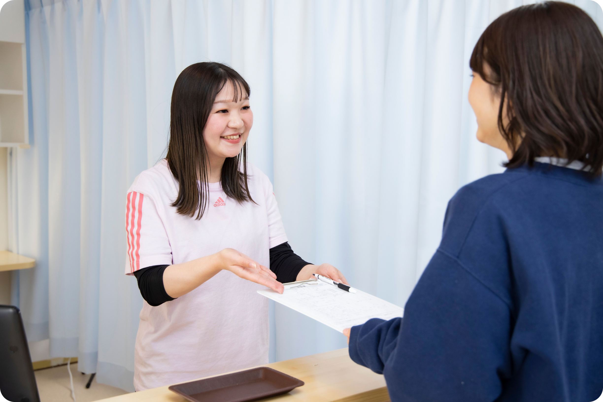
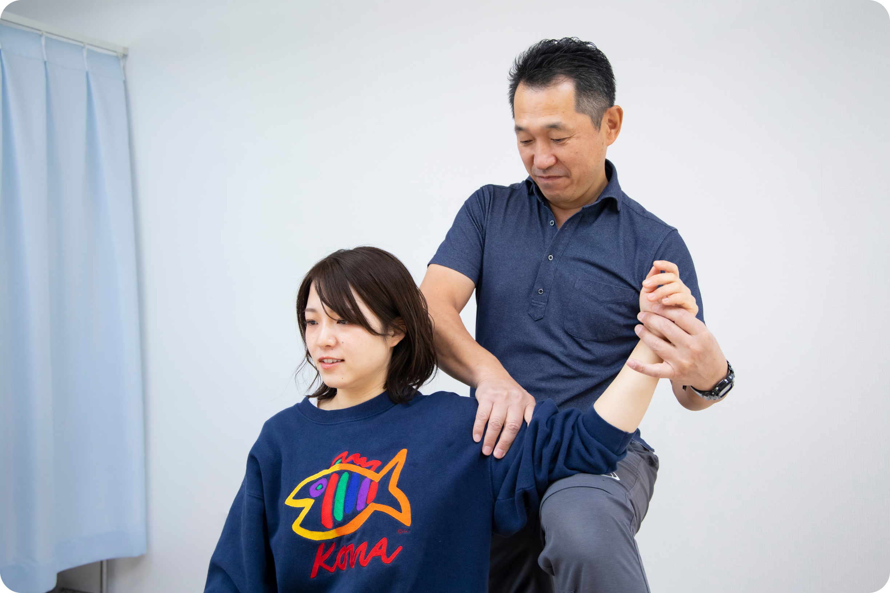
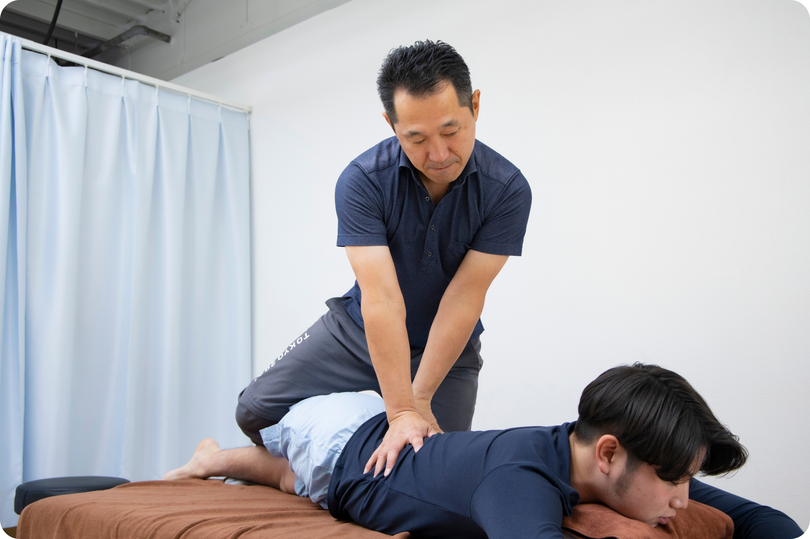
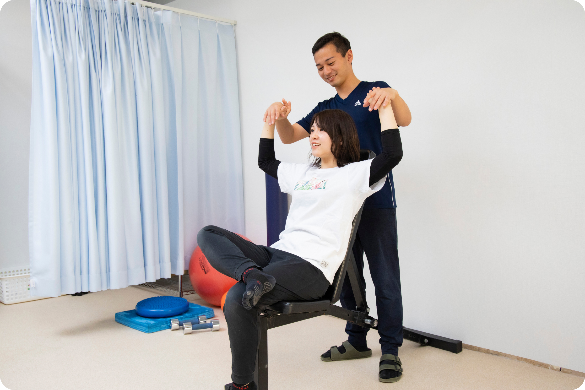

施術の流れ
-
01受付
＜20時30分まで受付。女性スタッフが笑顔でお待ちしています＞
当院は予約優先制となっております。スムーズに施術をお受け頂けるよう、初めての方には お電話またはWEBでのご予約されてからご来院される事をお勧め致しております。
受付では、現在お困りの症状や考えられる原因などを記載していただきます。保険証をお持ちの方はご提示ください。 -
02問診・検査
＜お困りのことをお気軽にご相談ください。お体の状態についてわかりやすくご説明します＞
問診では痛めた原因を確認するとともに必ず触診を行い、腫れ・熱感・圧痛・抵抗時痛の有無を確認し、考えられる怪我のスペシャルテストを行います。けがや痛みの原因となっている身体のゆがみやバランスの悪さもチェックします。
必要に応じて超音波画像診断装置を使った検査も行います。 -
03治療方針決定
＜患者様それぞれのライフスタイルに合わせて治療方針を決定してゆきます＞
スポーツ選手の方は競技歴やポジション、トレーニングの頻度や目標としている大会の日程により、復帰に向けたリハビリプログラムを個別に組み立ててゆきます。
レントゲン撮影やMRI検査が必要な方には提携病院にて検査を受けていただきます。 -
04施術
＜経験豊富なスタッフが安心の施術を行います＞
当院ではプロスポーツの世界で培った手技治療と医療の国家資格を持ったスタッフによる最新の医療機器で女性やお年寄りにも安心して受けられる施術を行います。
 -
05運動指導
＜プロトレーナーによるエクササイズ指導を行います＞
治療後にはご自宅でも出来る予防法やエクササイズを指導させていただきます。スポーツをしている方には目標に応じてリハビリから競技復帰に向けた段階的なトレーニングの上げ方についてもご指導させていただきます。
-
06お会計・次回ご予約
＜各種クレジットカード・電子マネーでの決済が可能です。＞
お会計とともにお客様のライフスタイルやケガの重症度に合わせた予約スケジュールを組んでいただきます。所要時間は約60分です。
一緒に痛みのない生活、自由に思い切り動かせるカラダをつくってゆきましょう!
-
01受付
スポーツの怪我を専門的に施術できるところを探している
当院は予約優先制となっております。スムーズに施術をお受け頂けるよう、初めての方には お電話またはWEBでのご予約されてからご来院される事をお勧め致しております。
受付では、現在お困りの症状や考えられる原因などを記載していただきます。保険証をお持ちの方はご提示ください。 -
02問診・検査
急な腰痛・寝違えのつらい痛みをなんとかしたい
問診では痛めた原因を確認するとともに必ず触診を行い、腫れ・熱感・圧痛・抵抗時痛の有無を確認し、考えられる怪我のスペシャルテストを行います。けがや痛みの原因となっている身体のゆがみやバランスの悪さもチェックします。
必要に応じて超音波画像診断装置を使った検査も行います。 -
03治療方針決定
スポーツで怪我をしたけれど、なんとか大会に間に合わせたい
スポーツ選手の方は競技歴やポジション、トレーニングの頻度や目標としている大会の日程により、復帰に向けたリハビリプログラムを個別に組み立ててゆきます。
レントゲン撮影やMRI検査が必要な方には提携病院にて検査を受けていただきます。 -
04施術
つらい肩こり・頭痛・自律神経の症状に困っている
当院ではプロスポーツの世界で培った手技治療と医療の国家資格を持ったスタッフによる最新の医療機器で女性やお年寄りにも安心して受けられる施術を行います。
-
05運動指導
カラダのバランスを整えて自然な状態で過ごしたい
治療後にはご自宅でも出来る予防法やエクササイズを指導させていただきます。スポーツをしている方には目標に応じてリハビリから競技復帰に向けた段階的なトレーニングの上げ方についてもご指導させていただきます。
-
06お会計・次回ご予約
腱鞘炎や関節の痛みに悩まされている
お会計とともにお客様のライフスタイルやケガの重症度に合わせた予約スケジュールを組んでいただきます。所要時間は約60分です。
一緒に痛みのない生活、自由に思い切り動かせるカラダをつくってゆきましょう!
院情報
Infomation
〒242-0005 神奈川県大和市西鶴間1-2-1ナベタビル1F
鶴間駅
徒歩0分
受付は診療時間の30分前までとなります
| 受付時間 | 月 | 火 | 水 | 木 | 金 | 土 | 日 | 祝 |
|---|---|---|---|---|---|---|---|---|
| 10:00〜13:00 | ● | ● | ● | ● | ● | ★ | 休 | 休 |
| 16:00〜21:00 | ● | ● | ● | ● | ● | ★ | 休 | 休 |
★土曜日は9:00〜18:00通し営業
定休日：日曜・祝祭日
都合により休診日・診療時間が変更になる場合がありますのでご注意ください。